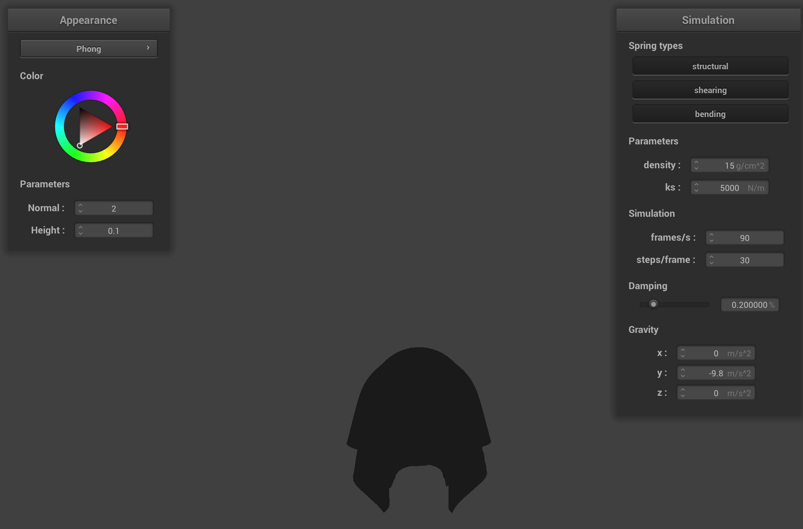
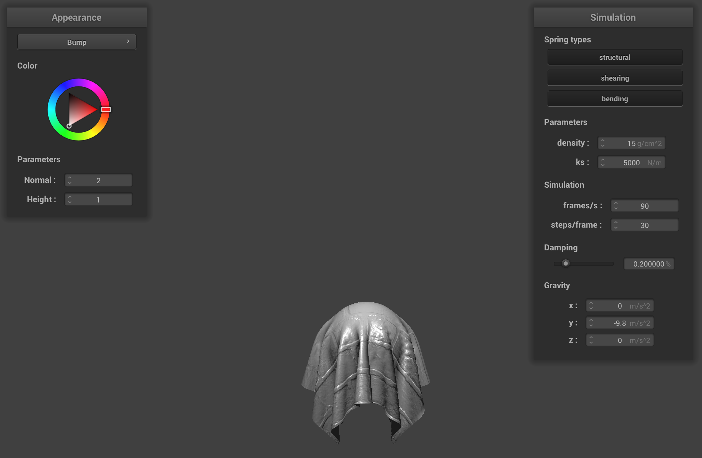

CS184/284A Spring 2025 Homework 4 Write-Up
Link to webpage: https://cal-cs184-student.github.io/hw-webpages-haku-fan-club-writeups/hw4/index.html
Link to GitHub repository: https://github.com/cal-cs184-student/sp25-hw4-haku-fan-club-4
Overview:
In this homework, we learned how to implement a mesh grid built upon different types of springs and point masses. And by leveraging the properties of this grid, aka due to the properties of its components, we could treat it like a cloth. By accounting for how the individual components interact during collisions with other objects, self-collisions, and how they react under both external and spring forces, we could realistically model the mesh grid as a piece of cloth that could move as we may expect in real life. Finally, by incorporating different shading techniques like Blinn Phong shading, texture mapping, and reflecting, we could make the cloth have different appearances, which could look quite realistic depending on the application. Ultimately, we made a piece of realistic looking cloth out of a mesh of springs and point masses, whose exterior looked realistic due to choices in shading implementation and techniques.
Part 1: Masses and springs
Here are some different viewing angles of the cloth wireframe, so you can clearly see the structure of our point masses and springs in scene/pinned2.json
|
|
|

|
Here is what the wiring frame looks like with these modifications on spring constraints:
|
|
|

|
Part 2: Simulation via numerical integration
In this part, we integrated the physical equations of motion to apply the forces on the cloth's point masses, analyzing how different variables affect the cloth's behavior and appearance.\(k_s\): \(k_s\) is the spring constant, and as we increase this value, the cloth becomes less elastic and bouncy. For a low \(k_s\) value, the cloth bounces up and down a lot before settling into the resting state, as the springs aren't as powerful in pulling the cloth to its rest position. In the final resting state, the cloth droops down between the pinned corners with more visible wrinkles, as shown in the image below. On the other hand, for a high \(k_s\) value, the cloth stretches much less and settles into the resting state much more quickly. In its final resting state, the cloth is more rigid with minimal stretching or folding. The resting states for different \(k_s\) values are shown below:
|
|

|

|
density: The density of the cloth is equal to mass / volume. Since volume remains the same, the higher the density of the cloth is, the higher the mass is. Thus, for low densities, the cloth is very lightweight, and when it falls, it bounces more and takes longer to reach its final state. In the final resting state, the cloth appears less stretched out and doesn't droop down very much between the pinned corners. On the other hand, for high densities, the cloth has more mass, and this causes it to act more rigidly, bouncing much less and quickly reaching its final state. In the final resting state, the cloth droops down much more and appears more wrinkly with deeper folds, which intuitively makes sense if the cloth is heavier. The resting states for different density values are shown below:

|

|

|
damping: Damping controls the amount of energy lost at every time step. With a low damping factor, the cloth bounces and oscillates back and forth a lot. It initally falls much more quickly but takes longer to reach the final resting state. Also, the cloth is much more wrinkly as it oscillates when it is dropped. On the other hand, with a high damping factor, the cloth falls at a slower rate and barely oscillates, but it reaches the final resting state quicker because it doesn't really bounce. The cloth appears very rigid and has very few wrinkles. The cloth at 2 different positions (not resting state) with a high and low damping factor are shown below:

|

|

|

|
Finally, here is the shaded cloth from
scene/pinned4.json in its final resting state (default parameters):

Part 3: Handling collisions with other objects
Here were our main steps in how we implemented handling collisions:
- First, check if we actually need to handle the collision.
In other words, if the point mass was actually inside the plane or sphere. For the plane, we check this based on if the point has crossed the plane. Mathematically we compute the signed distances (which we can obtain from the dot product between the vector from any point from the plane to the point mass, and the plane’s normal) of the last position and current position of the point. Different signs indicate the point being on different sides of the plane, thus the point is “inside” the plane if the signs of the two signed distances are different. To check if the point is inside the sphere, we just take the difference vector between the point’s position and the origin of the sphere. If the length of this distance vector is less then the sphere’s radius, the point must be inside the sphere!
- Second, if there is a collision, then we need to compute what change in position to the point is necessary to resolve the collision.
We resolve it by bumping up the “point mass” such that it lies on the surface of the plane/sphere. We take this as our “correction vector”. For the sphere, the correction vector is the difference vector between the point’s position and the sphere’s origin. The problem is that the difference vector is too small, thus the point is inside the sphere. All we have to do is scale this difference vector until its length is that of the sphere’s radius. So we can obtain the correction vector by taking the difference vector (which points outward from the origin), and scale it by the sphere’s radius. For the plane, we first calculate the tangent point, which is the intersection of where the point mass would have hit the plane if we extended it in a straight line. We do this using a parametric line equation, solving for a scalar t that occurs when the point is exactly on the plane. This t can be used to find the actual intersection point, which is the tangent point. The correction vector points from the point’s last position to this tangent point. We then add a small surface offset to the correction vector, because we don’t actually want the point’s new position to end up on the plane surface, but instead just above it. However, this small offset needs to be added along the unit normal of the plane, and also depends on what side the point came from. Thus if the signed distance of the last position was positive, we add the surface offset to the correction vector in the direction of the unit normal because the point comes from above the plane. Likewise, subtracting the surface offset if the signed distance was negative.
- Finally, we adjust the point mass’s position using the correction vector from earlier. However, we must also account for friction.
So all this step is, is updating the point’s new position, to the point’s last position plus the correction vector scaled by (1-f), where f is the friction coefficient, since we want to scale it down by friction.
Screenshots of shaded cloth from scene/sphere.json in its final resting state on the sphere with different values of ks:
When actually playing each animation of dropping the cloth, as we decrease the value of ks, the cloth seems to drape over the sphere much more like cloth, as in it softly drapes.
However, as we increase ks, the cloth becomes much more rigid, and tends to maintain its shape regardless of the sphere. This can be seen in the screenshots below, where for example, when
ks = 50000, there is a noticeable difference in how it seems angled compared to ks = 500, which follows better the shape of the sphere it drapes around. When ks = 5000,
we witness its form being somewhere in between these two, with elements of both rigidity and droopiness.
ks = 5000 (default) |
ks = 500 |
ks = 50000 |
Now a screenshot of our shaded cloth lying peacefully at rest on the plane:
scene/plane.json(default) |
Part 4: Handling self-collisions
In this part, we implemented self-collisions using spatial hashing. First, inCloth::hash_position, we hashed any given 3D point mass position into a unique float identifier,
which represents a specific 3D volume. To implement this, we began by partitioning the space into 3D boxes with dimensions \(w * h * t\), setting w = 3 * width / num_width_points,
h = 3 * width / num_height_points, and t = max(w, h). The constant 3 acts as a magic number to help improve the hashing algorithm's accuracy. Then, using the fmod
function, we truncated the x, y, and z values to the lower-bound of the its specific box. For example, float x = pos.x - fmod(pos.x, w), and we did the same for the y and z values accordingly (with h and t).
We then converted the box indices to integers to get values x_int, y_int, z_int and finally combined these values into a float by weighting them with magic numbers (1, 100, and 10000) to generate a unique hash.
Then, in
Cloth::build_spatial_map, we looped over every point mass and called hash_position to generate their unique hashes and stored these values in a map. The spatial map maps the hash
value (float) to a corresponding vector of point masses.
Finally, we also implemented
Cloth::self_collide, which takes in a point mass, calculates its unique hash value, and looks this up in the hash table. This returns a vector of all the possible collision candidates. Then,
we looped through all the potential candidates (excluding the given point mass itself), checking if their distance from the given point mass is within \(2 * thickness\). If so, we calculated a correction vector diff.unit() * (2*thickness - diff.norm()), where Vector3D diff = (pm.position - pm2->position). We added
up all the correction vectors and averaged them, then scaled them down by simulation_steps to improve the accuracy. We added this final averaged and scaled correction vector to the given point mass position. To make sure self-collisions are
properly accounted for in the simulation, we also called this method self_collide on every point mass in Cloth::simulate.
Thus, with these steps, we've implemented self-collisions, and as the cloth falls, it now folds on itself instead of clipping through itself.
Here are screenshots of how the cloth behaves as it falls at 3 different timestamps:

|
|

|
As the density increases, the mass of the cloth increases as well, causing the cloth to fall quicker and with many more folds throughout. Also, the cloth bounces around much more and the folds are more piled up with higher densities during self collisions. Below are images of the cloth with a high density and low density midfall:
|
|
|
As the spring constant \(k_s\) increases, the cloth becomes more stiff as it falls, leading to less stretching and wrinkles. The folds are also more larger and more crisp as the spring constant increases. Below are images of the cloth with a high and low spring constant at 2 different positions during the fall:
|
|
|
|
|
|
Part 5: Shaders
A shader program is a program that runs on a GPU and computes rendering operations to manipulate the lighting, colors, textures, and other aspects of a scene's appearance. Shader programs are often used for visual effects, and on a lower level they take in certain inputs and output a 4D vector. 2 specific shader types are vertex and fragment shaders, which work together to create lighting and material effects.
As the name states, vertex shaders process and transform vertices, applying geometric transformations such as translations, rotations, scaling, etc. After calculations, the vertex shaders write the final positions of the vertex to the fragment shader. Then, after this and rasterization, the fragment shader takes in the fragments produced. The role of the fragment shader is to use this data to determine the final output color of each fragment by applying textures, lighting models, etc. This helps create material effects and lighting. Thus, these 2 important shaders work together sequentially in order to create realistic models with visual effects and lighting.
The Blinn-Phong shading model is composed of three different types of lighting that when altogether put together, seem to model an object quite nicely/realistically depending on how you adjust the components. Here are each of the 3 components:
- Ambient Lighting
This is constant and indirect lighting that can be thought of as the background lighting, and ensures that all surfaces, regardless of whether or not there is a light source illuminating them, will be visible to some degree, proportional to I_a, which is the intensity of the ambient light.
- Diffuse Lighting
This is the light that is scattered when hitting a surface, and importantly scattered uniformly in all directions, producing a matte appearance. Due to Lambert’s cosine law, the light received per unit area by the surface depends on the angle between the light direction and the surface normal, and in other words, proportional to their dot product (unless it’s negative, because we can’t have negative light so we set it to 0 in that case). The intensity of the light has an inverse-square falloff as distance increases. Thus diffuse lighting is also proportional to (1/r^2).
- Specular Lighting
This is the light corresponding to the shiny highlights that we see on glossy surfaces. The intensity of the light depends on where you view it from, and it’s brightest when the viewer is looking in the angle where the light will undergo perfect reflection. We approximate this as the half vector that is near the normal vector to the surface, which is very close to the perfect reflection angle. Thus, specular lighting is proportional to the dot product between the normal vector and this half vector (once again, unless it’s negative, then in which case the intensity is 0). Specular lighting also has an inverse squared falloff, so it’s also proportional to 1/r^2. Also, we tend to see the dot product raised to an exponent p, which is a parameter controlling exactly how shiny the highlights are.
When put together, we give each of the lighting types a coefficient to control how much we want that lighting to contribute to our overall shading model and sum them together. The resultant model is Blinn-Phong!
Here is how our Blinn-Phong shading model looks on scene/sphere.json:
|

|
|
|
|
|
Here are some different angles of how our texture mapping shader looks like with our own custom texture!
our custom texture on the cloth (bird's eye view) |

|
|
Here is how bump and displacement mapping looked like for scene/sphere.json, using the texture from texture_3.png:
Comparing the bump mapping and the displacement mapping on the sphere itself, we can clearly see that both actually change the sphere’s appearance (in this case, it appears as if the sphere has adopted the brick inlay pattern). Taking a close look at the outline of the sphere in bump mapping, it appears to be perfectly spherical. But taking a close look at the displacement mapped sphere reveals that the outline itself is bumpy, which makes the sphere actually appear non-spherical, with slight deviations on its surface as well! The geometry of the sphere has actually in fact changed in the case. However, the “inside” of the sphere is shaded extremely similarly in both cases (as we’d expect, since they use Blinn-Phong).
Now looking at the cloth draped on the sphere, we observe similar differences. For example, in displacement mapping, the cloth has additional deformities, and in both cases the cloth itself has the texture mapped onto it. Also, notice that we can see the deformity in the sphere affects how the cloth is draped, as the top of cloth is more bumpy and not perfectly spherical in the displacement mapped image.
In essence, though both mappings change how the surfaces are rendered via texture data, displacement mapping actually shifts relative positions and changes the surface geometry of its model, whereas bump mapping does not affect the shape itself, but affects shading to kind of replicate that effect .
|
|

|
|
|
|
When we increase resolution, notice how the images rendered by bump resolution do not change (at least by any noticeable amount) in both the cloth and sphere images.
However, we can see a significant difference in the sphere rendered by displacement resolution. With higher resolution, we see the outline resembling more of a sphere, though both will be non-perfectly spherical. This makes sense. In higher resolutions, simply more vertices are used. So when they are perturbed, the changes aren’t as drastic since there’s just more of them. But in the case of the cloth, it seemed that there wasn’t a significant difference, perhaps due to the spring system of the cloth. Anyhow, when resolution increased, the image appeared to be smoother, though the changes in the surface of the cloth weren’t as easy to observe compared to just the sphere itself.
-o 16 a -16 on the sphere |

-o 128 a -128 on the sphere |

-o 16 a -16 on the cloth |
-o 128 a -128 on the cloth |

-o 16 a -16 on the sphere |
-o 128 a -128 on the sphere |
-o 16 a -16 on the cloth |
-o 128 a -128 on the cloth |
Here is how our mirror shader looks:

|
|